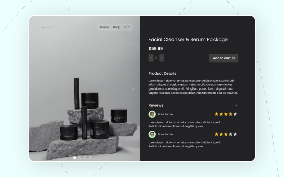
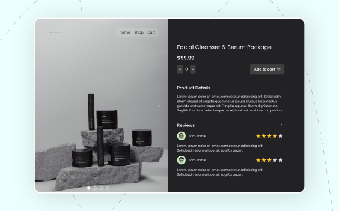

hello, my name is Dolapo :)
A retired makeup nerd who now designs awesome digital experiences! I’m a Product designer with a background in social sciences, I love to explore new concepts, and connect with people.
I enjoy applying creative and entrepreneurial thinking to solving design and user experience problems.


 
